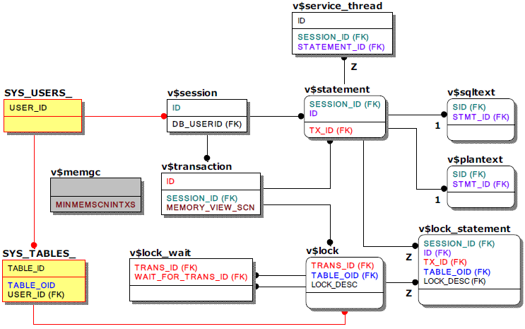

scion The user can check the session, query, transaction, lock, service thread, and memory DB GC status in real time through meta table and performance view. The ERD below shows the join relationship between the meta table used in the monitoring query and the performance view.
v$memgc, which is marked separately, is a performance view for the memory DB GC, and has no direct relationship with other meta tables and performance views, but is used with a specific column of v$transaction.
Note that the statistics information related to query execution among the columns of v$statement is updated only when the TIMED_STATISTICS property is activated (1), so you must check whether the property is activated. The default value of TIMED_STATISTICS is disabled (0).
For reference, transaction due to replication also utilize v$transaction, v$lock, and v$lock_wait, but are referred to separately in the replication section due to the nature of the replication transaction without session number or query number.

Main Meta Tables
SYS_USERS
It is a meta table that is widely used as a meta table to store database user information such as the USER_NAME.SYS_TABLES
This is a meta table that stores not only tables (including queue tables), but also sequence and view information, so it is possible to check information such as the object name (TABLE_NAME), which is basically used with SYS_USERS_.
Main Performance Views
v$session
This is a performance view that shows session information of the currently connected user.v$statement, v$sqltext, v$plantext
This is a performance view that shows query information and query level statistics related to the session, and it is possible to measure the execution time and frequency of queries. This view shows one direct-execute query and several preparsed query information per session and disappears at the end of the session. The query length shown in this view is 16K.If the text of the query exceeds 16K, use v$ sqltext, a performance view that shows the entire query text, and use v$plantext to check the execution plan corresponding to the query.
As mentioned before, statistical information related to query execution among columns of v$statement is provided only when the TIMED_STATISTICS property is activated (1), so the user must check whether the property is activated. The default value of TIMED_STATISTICS is disabled (0).
v$service_thread
As a performance view showing the status of service threads, the user can check related sessions and queries by joining v$session and v$statement. The view itself is meaning, so it can be monitored alone.v$transaction, v$memgc
v$ transaction is a performance view that shows information about all currently executed transactions, and is basically used when monitoring locks. In addition, the MVCC status associated with session and syntax can be checked through v$memgc, which is a performance view that shows information of the memory DB GC.
v$lock, v$lock_wait
v$lock is a performance view that shows all information about the lock that occurred during the execution of a transaction, and is used with v$lock_wait, which represents the ancestor relationship of the lock.
v$lock_statement
v$lock_statement vis a performance view that shows the last statement executed in the transaction that acquired the current lock, and is mainly used to quickly check the related session and statement when a lock occurs
{kind=link}